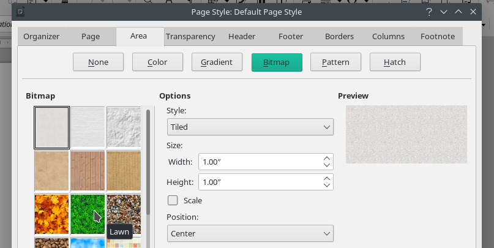
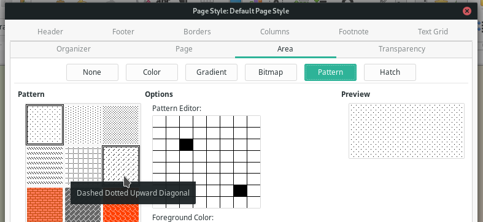

Week #1 - GSoC Weekly Report - 100 Paper Cuts
Thanks to my ‘100 Paper Cuts’ project mentors Muhammet Kara and Heiko Tietze for their guidance and code reviews; and thanks to everyone who helped me a lot for finding code pointers.
Hi all. I want to share my current progress for week #1.
Mouseover effect added to palettes in the Area tab
- Bug: tdf#109388 - UI:No mouseover effect for the different palettes in the Area tab
- Commit: https://gerrit.libreoffice.org/c/core/+/116395
Mouseover effect wasn’t showing in palettes on Color, Gradient, Bitmap, Pattern and Hatch sections. These sections are located at Format > Page Style... > Area Tab.
Since Font Color and Highlight Color palettes have the mouseover effect, I tried to find code pointers for them to understand how mouseover effect is shown in the code.
// ValueSet
m_xValSetColorList->SetStyle(m_xValSetColorList->GetStyle() |
WB_FLATVALUESET | WB_ITEMBORDER | WB_NO_DIRECTSELECT | WB_TABSTOP);WB(WinBits) are showing the styles of palettes and WB_FLATVALUESET does the mouseover effect on the palettes. In some sections SetStyle() wasn’t set. The ones that have the SetStyle(), didn’t have the WB_FLATVALUESET. I just added the SetStyle() and WB_FLATVALUESET within it. Now, mouseover effect works fine on the Area Tab.
Before: No mouseover effect:

After:

***
Fix opposite cropping issue on flipped images in Writer
- Bug: tdf#104995 - Cropping flipped images occurs at the wrong side
- Commit: https://gerrit.libreoffice.org/c/core/+/116770
Another annoying issue in LibreOffice.
- Add an image in Writer.
- Right-click > Rotate or Flip > Flip Vertically/Horizontally
- Try to crop the image.
Cropping will occur at the opposite side of the image.
- If flipped vertically, trying to crop top will crop the bottom.
- If flipped horizontally, trying to crop right will crop the left.(the same goes to the other sides.)
- If flipped both vertically and horizontally, crop doesn’t work any side of the image.
I’ve spend about 3-4 days to find code pointers because ‘flipping’ is mentioned as ‘mirroring’ in the code.
In sw/source/core/graphic/ndgrf.cxx, flipping flags are set to GraphicAttr& rGA in the function SwGrfNode::GetGraphicAttr(...). Crop values are applied to rGA.SetCrop:
rGA.SetMirrorFlags( nMirror );
const SwCropGrf& rCrop = rSet.GetCropGrf();
rGA.SetCrop( convertTwipToMm100( rCrop.GetLeft() ),
convertTwipToMm100( rCrop.GetTop() ),
convertTwipToMm100( rCrop.GetRight() ),
convertTwipToMm100( rCrop.GetBottom() ));Then, I thought that what if we also mirror the crop values alongside the image?
Assign Left, Top, Right and Bottom crop values to our new variables to work with easily:
tools::Long nCropLeft = rCrop.GetLeft();
tools::Long nCropTop = rCrop.GetTop();
tools::Long nCropRight = rCrop.GetRight();
tools::Long nCropBottom = rCrop.GetBottom();Then, mirror the crop values according to their flipping type:
// take mirroring of crop values into consideration
// while cropping a flipped image. otherwise,
// cropping will crop the opposite side of the image.
if (rGA.GetMirrorFlags() & BmpMirrorFlags::Vertical)
{
nCropTop = rCrop.GetBottom();
nCropBottom = rCrop.GetTop();
}
if (rGA.GetMirrorFlags() & BmpMirrorFlags::Horizontal)
{
nCropLeft = rCrop.GetRight();
nCropRight = rCrop.GetLeft();
}Finally, set crop values:
rGA.SetCrop( convertTwipToMm100( nCropLeft ),
convertTwipToMm100( nCropTop ),
convertTwipToMm100( nCropRight ),
convertTwipToMm100( nCropBottom ));Summary
2 bugs solved:
- tdf#109388 - UI:No mouseover effect for the different palettes in the Area tab
- tdf#104995 - Cropping flipped images occurs at the wrong side
Commits:
Current Status
Currently, I’m working on tdf#98404 - UX - While objects on a slide are being edited, notably text boxes, the new slide sorter Ctrl+Shift shortcut combinations (see bug 91909) incorrectly receive focus and move the slide.